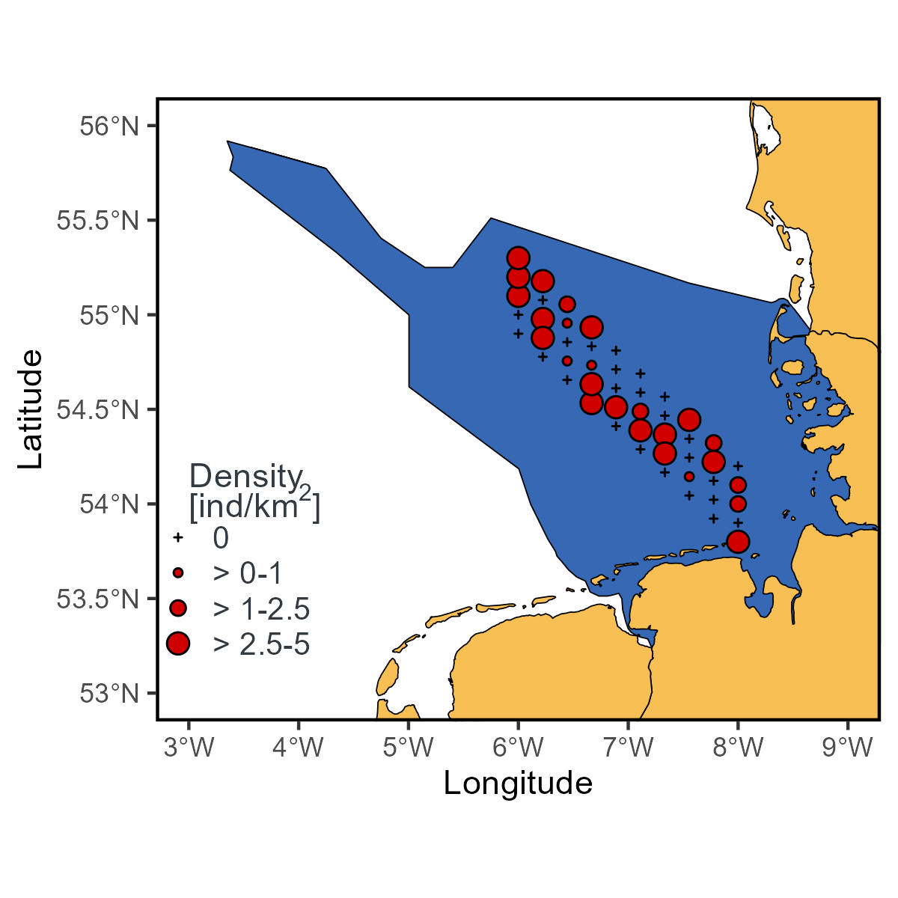

devtools::install_github("MiriamLL/SeaDens")Custom legends in a map
R
ggplot2
English
Y2023
surveys
Place the legend inside the map and custom the legend title
Intro
Customize the legend of your plot.
Plot
Load or install the package SeaDens
library(SeaDens)Load data
The package contains data from a random generated density data frame that can be used for the exercise.
If you want to create this map from scratch visit: create a map with custom points.
class0<-0
class1<-1
class2<-2.5
class3<-5
density_df<-density_df %>%
dplyr::mutate(density_class = dplyr::case_when(
densities == class0 ~ as.character("group0"),
densities >= class0 & densities <= class1 ~ as.character("group1"),
densities >= class1 & densities <= class2 ~ as.character("group2"),
densities >= class2 & densities <= class3 ~ as.character("group3"),
densities >= class3 ~ as.character("group4"),
TRUE~"U"))library(ggplot2)
library(GermanNorthSea)density_wmap<-ggplot2::ggplot()+
# maps
ggplot2::geom_sf(data = sf::st_transform(GermanNorthSea::German_EEZ,4326), colour = 'black', fill = '#3668b4')+
ggplot2::geom_sf(data = sf::st_transform(GermanNorthSea::German_land,4326), colour = 'black', fill = '#f7bf54')+
ggplot2::coord_sf(xlim = c(3,9), ylim = c(53,56))+
geom_point(data=density_df,
aes(x = longitude,
y= latitude,
shape = density_class,
size= density_class),
fill= "#d00000")+
scale_shape_manual(values = c("group0"=3, "group1"=21,"group2"=21, "group3"=21, "group4"=21),
labels=c('0','> 0-1','> 1-2.5','> 2.5-5','> 5'))+
scale_size_manual(values = c("group0"=0.5, "group1"=1,"group2"=2, "group3"=3, "group4"=5),
labels=c('0','> 0-1','> 1-2.5','> 2.5-5','> 5'))density_wmapadd_legend
I create this function to include the legend inside the plot, the function is available on the package SeaDens.
The function removes the background of the legend making it transparent, and includes the legend inside the plot based on the coordinates provided.
add_legend<-function(plot_wbreaks=plot_wbreaks,
legxy=legxy){
plot_wlegend<-plot_wbreaks+
ggplot2::theme(
legend.position = legxy,
legend.title = ggplot2::element_blank(),
legend.text= ggplot2::element_text(size=10,color="#343a40",family='sans'),
legend.spacing.y = ggplot2::unit(0.01, 'cm'),
legend.spacing.x = ggplot2::unit(0.2, 'cm'),
legend.background = ggplot2::element_rect(fill='transparent',colour ="transparent"),
legend.box.background = ggplot2::element_rect(fill='transparent',colour ="transparent"),
legend.key = ggplot2::element_rect(fill = "transparent", colour = "transparent"),
legend.key.size = ggplot2::unit(0.7, 'cm'))
return(plot_wlegend)
}Here, the arguments inside legxy are referring to where the legend will appear.
density_wlegend<-add_legend(
plot_wbreaks=density_wmap,
legxy=c(0.11, 0.21))
density_wlegendTo add the title of the legend, I used the function annotate and a specific expression since I am using superscript.
density_wlegend<-density_wlegend+
ggplot2::theme(legend.key.size = ggplot2::unit(0.4, "cm"))+
ggplot2::annotate(geom="text",
x=3.0, y=54.0,
label=expression(atop("Density"), paste("[ind/k", m^2,"]")),
color="#343a40",hjust = 0)
density_wlegendadd_theme
This function changes the x and y axis legends to Capitalized words and includes the symbol of degree on the plot. Removes the gray background and adds a white line on the panel border. It is also available in the package SeaDens, but I am including it here in case you want to customize it.
add_theme<-function(plot_wlegend=plot_wlegend){
plot_wtheme<-plot_wlegend+
ggplot2::xlab('Longitude')+
ggplot2::ylab('Latitude')+
ggplot2::scale_x_continuous(labels = function(x) paste0(x, '\u00B0', "W")) +
ggplot2::scale_y_continuous(labels = function(x) paste0(x, '\u00B0', "N"))+
ggplot2::theme(
panel.border = ggplot2::element_rect(colour = "black", fill=NA, linewidth = 1),
panel.grid.major = ggplot2::element_blank(),
panel.grid.minor = ggplot2::element_blank(),
panel.background = ggplot2::element_blank())
return(plot_wtheme)
}To run the function just add your plot.
density_wtheme<-add_theme(plot_wlegend = density_wlegend)
density_wthemeYou can theoretically use the function add_theme with any other map.
